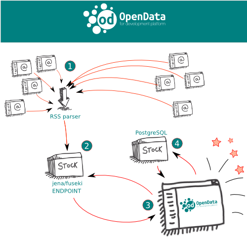

The Open Data for Development, known by the acronym "OD4D project" is composed by a Network of organizations that started in 2011 as a research about “Open Data for Public Policy in Latin America”. Part of the project was executed W3C Brazil office - and funded by IDRC. Untill 2013, the project was restricted to research, aiming qualitative and qualitative outputs related to Latam.(Read more here)
In 2013, the Network was increased by the presence of World Bank and some other participants, which caused the need for more connectivity between participants and faster spreading of actions, results and call to action that are inherent to the project. Thereto, a new website was conceived, based on Linked and open data concepts.
Comprehending that Semantic Web is the right approach to talk and research about Open and Linked Data, the decision of build on top of the content of the OD4D website a suite of softwares to connect and use the potencial of semantic data was taken by the team of W3C Brazil office, and counts on the funding of Brazilian Network Information Center (NIC.br) on behalf of the Brazilian Internet Steering Committee (CGI.br).
The goal of building this new platform is to strengthen and expand the existing community, meet new cases, point to good practices in data on the Web, promote relevant standards and vocabularies, as well as emphasizing the value of content in multiple languages within the platform. Besides being a space for knowledge exchange, the platform also aims at being itself an example of implementation of semantic web and linked data technologies.The platform can acts as a prove of concept to investors, governments, institutions and individuals that have intention to work together in creating a collaborative network around the theme of publishing data for development in Latin America, Africa, Asia and the Caribbean.
See the image below to understand:
The system consists of three main modules: the publisher, the parser and the storer. As you can see in the picture, tThe publisher module enables the input of new content into the platform. The parser processes partners' RSS channel and extracts semantic triples about this content. Finally, the storer stores RDF triples using the Turtle syntax with the help of Jena suite.
Finally, the platform will provide an endpoint so that users can access this information from the collected triple repository. This whole platform is available on Github for anyone who wants to build a website or semantic platform on some other domain.
The platform was built with semantic web and linked data technologies. The web application runs the Ruby on Rails framework. The RDF triples use Turtle syntax and their interface with an HTTP server were implemented using the Jena and Fuseki technologies by Apache Software Foundation.
We expect the experience provided on the platform enable greater integration of experts and enthusiasts of open data and semantic web technology community, facilitating an intensive exchange of information and the advancement of knowledge on open data.